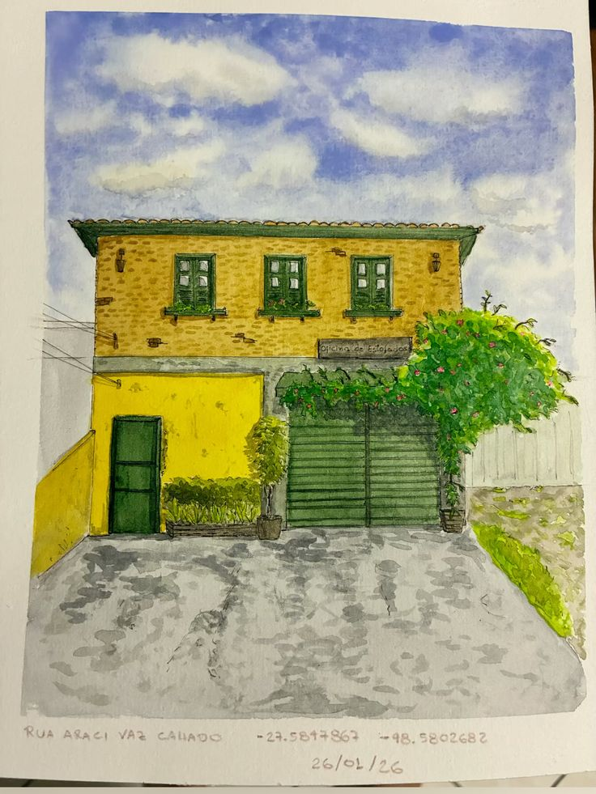
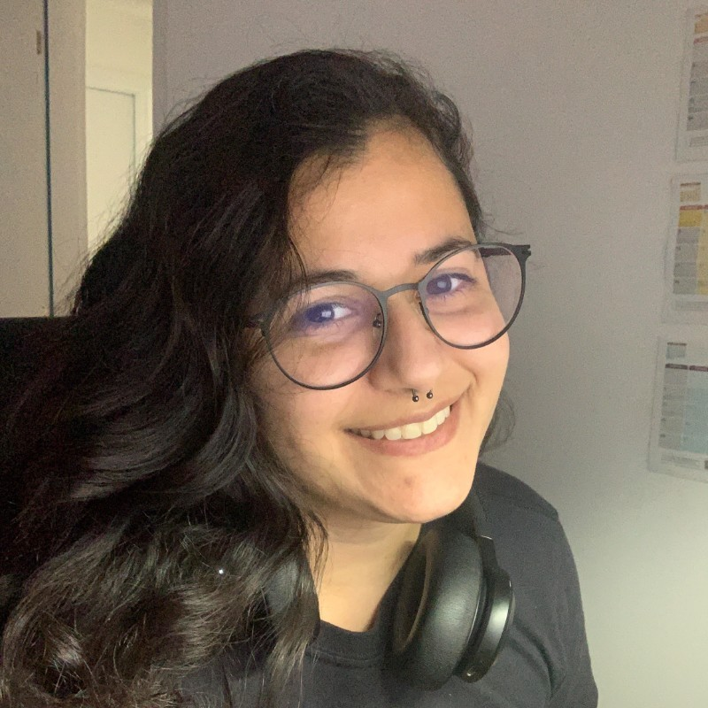

Urban sketch / aquarela / observação urbana
Santa Catarina em caderno abertoTerritórios em aquarela, linhas e memória urbana.
Um portfólio vivo de fachadas, caminhos e cenas de arquitetura afetiva em Santa Catarina, desenhadas a partir da atenção ao cotidiano e aos lugares.

Galeria
Uma parede de sketches em movimento suave.
Fachadas, ateliês, casas e recortes urbanos de diferentes cidades catarinenses ganham espaço como pequenas cenas de memória, cor e observação.

Sobre mim
Entre território, tecnologia e desenho.
Caroline Bernardo Silva é engenheira civil formada pela UFSC, mestre em Gestão Territorial e doutora em Engenharia do Conhecimento pela mesma universidade. Criada no Carianos e moradora do Balneário do Estreito, sempre gostou de observar a paisagem e as particularidades dos territórios.
Apaixonada por tecnologia, encontra no urban sketch uma forma de expressar sensibilidade e presença. Seus desenhos e aquarelas nascem desse encontro: o olhar de quem lê a cidade com atenção e a vontade de tornar público aquilo que enxerga em Santa Catarina.